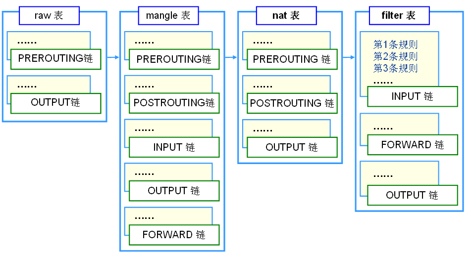
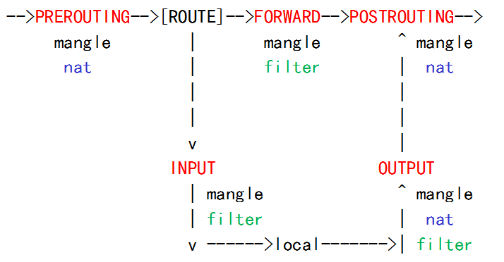
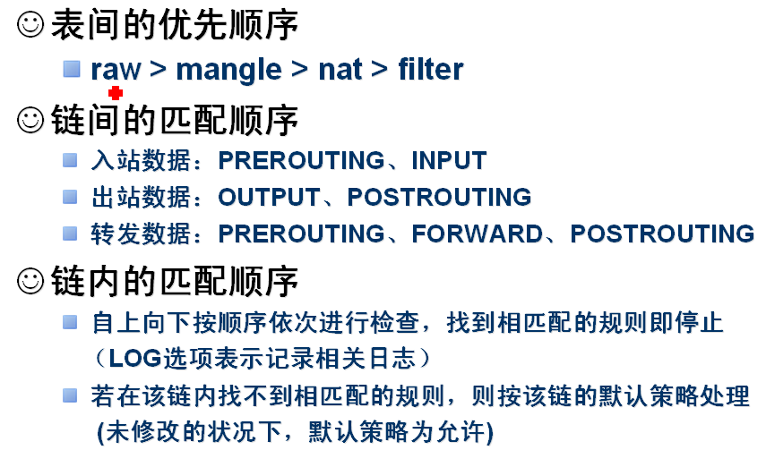
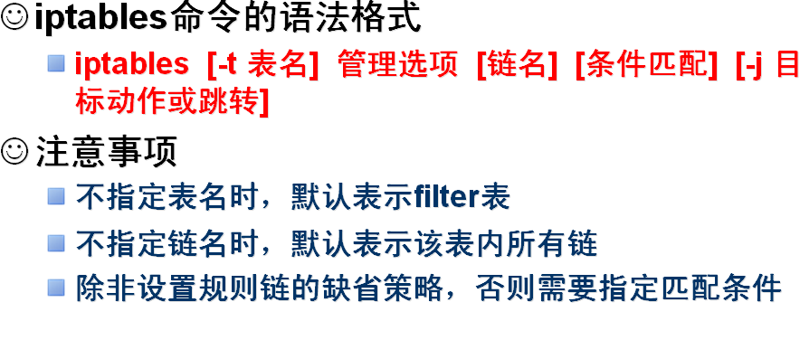
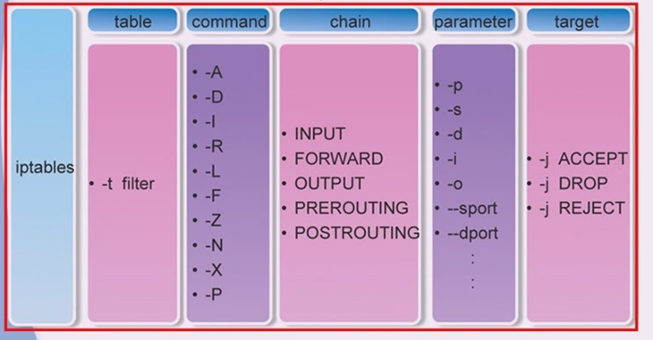
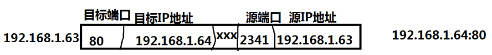
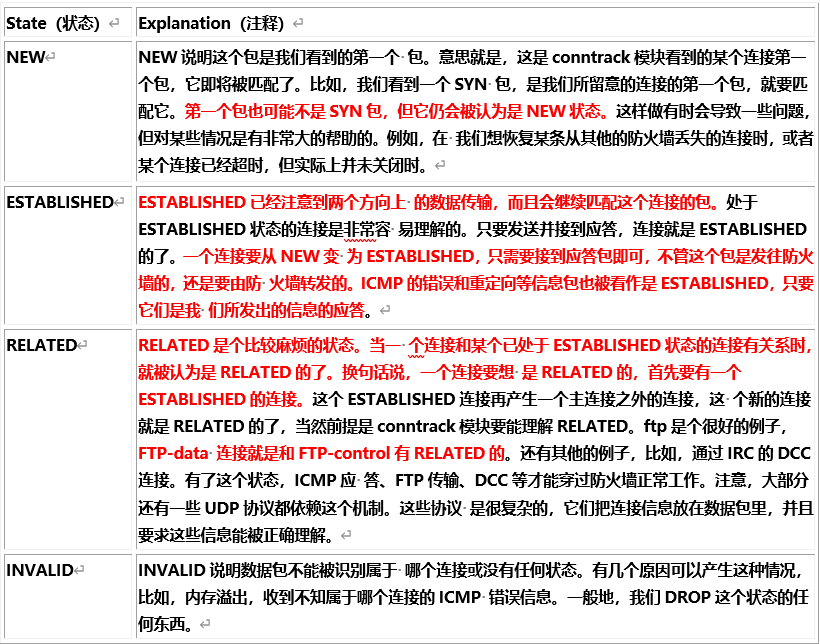

配置iptables防火墙
壹
iptables常见概念
iptables服务端：xuegod63.cn IP：192.168.1.63
iptables客户端：xuegod64.cn IP：192.168.1.64
一、iptables概述：
netfilter/iptables ：IP信息包过滤系统，它实际上由两个组件netfilter 和 iptables 组成。
netfilter/iptables 关系：
netfilter 组件也称为内核空间（kernelspace），是内核的一部分，由一些信息包过滤表组成，这些表包含内核用来控制信息包过滤处理的规则集。
iptables 组件是一种工具，也称为用户空间（userspace），它使插入、修改和除去信息包过滤表中的规则变得容易。
netfilter/iptables 后期简称为：iptables。iptables是基于内核的防火墙，功能非常强大，iptables内置了filter，nat和mangle三张表。所有规则配置后，立即生效，不需要重启服务。
二、三张表介绍：
filter负责过滤数据包，包括的规则链有，input，output和forward；
nat则涉及到网络地址转换，包括的规则链有，prerouting，postrouting和output；
mangle表则主要应用在修改数据包内容上，用来做流量整形的，给数据包打个标识，默认的规则链有：INPUT，OUTPUT、 forward，POSTROUTING，PREROUTING；
三、五个链：
input匹配目标IP是本机的数据包，
output 出口数据包 ， 一般不在此链上做配置
forward匹配流经本机的数据包，
prerouting用来修改目的地址，用来做DNAT 。如：把内网中的80端口映射到路由器外网端口上
postrouting用来修改源地址用来做SNAT。 如：内网通过路由器NAT转换功能实现内网PC机通过一个公网IP地址上网。
总结****：iptables三个表，5个链接，结构如图：

Raw [rɔ:]表：用于处理异常，包括的规则链有，prerouting，output；一般使用不到。
例：查看raw表中的内容：
[root@xuegod63 ~]# iptables -t raw -L
Chain PREROUTING (policy ACCEPT)
target prot opt source destination
Chain OUTPUT (policy ACCEPT)
target prot opt source destination
表->链->规则
Iptables过滤封包流程

–>PREROUTING–>[ROUTE]–>FORWARD–>POSTROUTING–>
mangle | mangle ^ mangle
nat | filter | nat
| |
| |
v |
INPUT OUTPUT
| mangle ^ mangle
| filter | nat
v —————->local————>| filter
**
**
**
**
总结： 整体数据包分两类：1、发给防火墙本身的数据包 ；2、需要经过防火墙的数据包
① 当一个数据包进入网卡时，它首先进入PREROUTING链，内核根据数据包目的IP判断是否需要转送出去。
② 如果数据包就是进入本机的，它就会沿着图向下移动，到达INPUT链。数据包到了INPUT链后，任何进程都会收到它。
本机上运行的程序可以发送数据包，这些数据包会经过OUTPUT链，然后到达POSTROUTING链输出。
③ 如果数据包是要转发出去的，且内核允许转发，数据包就会如图所示向右移动，经过FORWARD链，然后到达POSTROUTING链输出。
**
**

总结：整体数据包分两类：1、发给防火墙本身的数据包 ；2、需要经过防火墙的数据包
注意：规则的次序非常关键，谁的规则越严格，应该放的越靠前，而检查规则的时候，是按照从上往下的方式进行检查的。
**
**
贰
iptables服务器安装及相关配置文件
Iptables部署
Iptables是逻辑性比较强的服务，所以我们一个一个的实验疏通
一、安装
–关闭firewall：
[root@localhost ~]# systemctl stop firewalld.service #停止firewall
[root@localhost ~]# systemctl disable firewalld.service #禁止firewall开机启动
–安装安装iptables防火墙
[root@localhost ~]# yum install iptables-services #安装
二、配置文件位置：
[root@xuegod63 ~]# ls /etc/sysconfig/iptables
/etc/sysconfig/iptables
三、启动服务
[root@xuegod63 ~]# systemctl start iptables.service
[root@xuegod63 ~]# systemctl enable iptables.service


叁
实战：iptables使用方法
例1：iptables命令使用方法
£ iptables [-t 要操作的表]
<操作命令>
[要操作的链]
[规则号码]
[匹配条件]
[-j 匹配到以后的动作]
£ 操作命令（-A、-I、-D、-P、-F）
£ 查看命令（-[vnx]L）
-A <链名> APPEND，追加一条规则（放到最后）
例如：
iptables -t filter -A INPUT -j DROP #拒绝所有人访问服务器
在 filter 表的 INPUT 链里追加一条规则（作为最后一条规则）
匹配所有访问本机 IP 的数据包，匹配到的丢弃
-I <链名> [规则号码] INSERT，插入一条规则
例如：
iptables -I INPUT -j DROP
在 filter 表的 INPUT 链里插入一条规则（插入成第 1 条）
iptables -I INPUT 3 -j DROP
在 filter 表的 INPUT 链里插入一条规则（插入成第 3 条）
注意：1、-t filter 可不写，不写则自动默认是 filter 表
2、-I 链名 [规则号码]，如果不写规则号码，则默认是 1
3、确保规则号码 ≤ （已有规则数 + 1），否则报错
-R num：Replays替换/修改第几条规则
格式：iptables –t filter -R INPUT 3 ………… 修改filter的INPUT链第三条规则
-D <链名> <规则号码 | 具体规则内容> DELETE，删除一条规则
例如：
[root@xuegod63 ~]# iptables -L
Chain INPUT (policy ACCEPT)
target prot opt source destination
DROP all – anywhere anywhere
iptables -D INPUT 1（按号码匹配）
删除 filter 表 INPUT 链中的第1条规则（不管它的内容是什么）
[root@xuegod63 ~]# iptables -L
Chain INPUT (policy ACCEPT)
target prot opt source destination
iptables -D INPUT -s 192.168.0.1 -j DROP（按内容匹配）
删除 filter 表 INPUT 链中内容为“-s 192.168.0.1 -j DROP”的规则
（不管其位置在哪里）
注意：
1、若规则列表中有多条相同的规则时，按内容匹配只删除序号最小的一条
2、按号码匹配删除时，确保规则号码 ≤ 已有规则数，否则报错
3、按内容匹配删除时，确保规则存在，否则报错
-P <链名> <动作> POLICY，设置某个链的默认规则
例如：
[root@xuegod63 ~]# iptables -L #查看默认规则是ACCEPT [əkˈsept]
Chain INPUT (policy ACCEPT)
target prot opt source destination
iptables -P INPUT DROP
设置 filter 表 INPUT 链的默认规则是 DROP
[root@xuegod63 ~]# iptables -L #查看已经变为DROP
Chain INPUT (policy DROP)
target prot opt source destination
注意：
当数据包没有被规则列表里的任何规则匹配到时，按此默认规则处理。动作前面不能加 –j，这也是唯一一种匹配动作前面不加 –j 的情况。
-F [链名] FLUSH，清空规则
例如：
添加规则：
[root@xuegod63 ~]# iptables -t filter -A INPUT -j DROP
[root@xuegod63 ~]# iptables -F INPUT #清除INPUT链上的规则
[root@xuegod63 ~]# iptables -F #清除filter表中所有链上的规则
[root@xuegod63 ~]# iptables -t nat -F #清空NAT表中 所有链上的规则
[root@xuegod63 ~]# iptables -t nat -F PREROUTING #清空NAT表中 PREROUTING链上的规则
注意：
1、-F 仅仅是清空链中规则，并不影响 -P 设置的默认规则。需要手动改：
[root@xuegod63 ~]# iptables -P INPUT ACCEPT
2、-P 设置了 DROP 后，使用 -F 一定要小心！！！
##在生产环境中，使用-P DROP 这条规则，一定要小心，设置之前最好配置下面两个任务计划，否则容易把自己drop掉，链接不上远程主机。
配置crontab :
*/15 * * * * iptables -P INPUT ACCEPT
*/15 * * * * iptables –F
3、如果不写链名，默认清空某表里所有链里的所有规则
-Z 将封包计数器归零
iptables -Z INPUT
-L [链名] LIST，列出规则
v：显示详细信息，包括每条规则的匹配包数量和匹配字节数
x：在 v 的基础上，禁止自动单位换算（K、M）
n：只显示 IP 地址和端口号码，不显示域名和服务名称
–line-number 可以查看到规则号
例如：
iptables -L
粗略列出 filter 表所有链及所有规则
iptables -t nat -vnL
用详细方式列出 nat 表所有链的所有规则，只显示 IP 地址和端口号
iptables -t nat -vxnL PREROUTING
用详细方式列出 nat 表 PREROUTING 链的所有规则以及详细数字，不反解
互动： iptables -L -n 可以执行成功
iptables -Ln 是否可以执行成功？
匹配条件
£ 流入、流出接口（-i、-o）
£ 来源、目的地址（-s、-d）
£ 协议类型 （-p）
£ 来源、目的端口（–sport、–dport）
按网络接口匹配
-i <匹配数据进入的网络接口> #此参数主要应用于nat表，例如目标地址转换
例如：
-i eth0
匹配是否从网络接口 eth0 进来
-i ppp0
匹配是否从网络接口 ppp0 进来
-o 匹配数据流出的网络接口
例如：
-o eth0
-o ppp0
按来源目的地址匹配
-s <匹配来源地址>
可以是 IP、 网段、域名，也可空（任何地址）
例如：
-s 192.168.0.1 匹配来自 192.168.0.1 的数据包
-s 192.168.1.0/24 匹配来自 192.168.1.0/24 网络的数据包
-s 192.168.0.0/16 匹配来自 192.168.0.0/16 网络的数据包
-d <匹配目的地址>
可以是 IP、 网段、域名，也可以空
例如：
-d 202.106.0.20 匹配去往 202.106.0.20 的数据包
-d 202.106.0.0/16 匹配去往 202.106.0.0/16 网络的数据包
-d www.abc.com 匹配去往域名 www.abc.com 的数据包
按协议类型匹配
-p <匹配协议类型>
可以是 TCP、UDP、ICMP 等，也可为空
例如：
-p tcp
-p udp
-p icmp –icmp-type 类型
ping: type 8 pong: type 0
按来源目的端口匹配
–sport <匹配源端口>
可以是个别端口，可以是端口范围
例如：
–sport 1000 匹配源端口是 1000 的数据包
–sport 1000:3000 匹配源端口是 1000-3000 的数据包（含1000、3000）
–sport :3000 匹配源端口是 3000 以下的数据包（含 3000）
–sport 1000: 匹配源端口是 1000 以上的数据包（含 1000）
–dport <匹配目的端口>
可以是个别端口，可以是端口范围
例如：
–dport 80 匹配目的端口是 80 的数据包
–dport 6000:8000 匹配目的端口是 6000-8000 的数据包（含6000、8000）
–dport :3000 匹配目的端口是 3000 以下的数据包（含 3000）
–dport 1000: 匹配目的端口是 1000 以上的数据包（含 1000）
注意：–sport 和 –dport 必须配合 -p 参数使用
匹配应用举例
1、端口匹配
-p udp –dport 53
匹配网络中目的端口是 53 的 UDP 协议数据包
2、地址匹配
-s 10.1.0.0/24 -d 172.17.0.0/16
匹配来自 10.1.0.0/24 去往 172.17.0.0/16 的所有数据包
3、端口和地址联合匹配
-s 192.168.0.1 -d www.abc.com -p tcp –dport 80
匹配来自 192.168.0.1，去往 www.abc.com 的 80 端口的 TCP 协议数据包

注意：
1、–sport、–dport 必须联合 -p 使用，必须指明协议类型是什么
2、条件写的越多，匹配越细致，匹配范围越小
4 动作（处理方式）
£ ACCEPT
£ DROP
£ SNAT
£ DNAT
£ MASQUERADE
-j ACCEPT
通过，允许数据包通过本链而不拦截它
例如：
iptables -A INPUT -j ACCEPT
允许所有访问本机 IP 的数据包通过
-j DROP
丢弃，阻止数据包通过本链而丢弃它
例如：
iptables -A FORWARD -s 192.168.80.39 -j DROP
阻止来源地址为 192.168.80.39 的数据包通过本机
-j SNAT –to IP[-IP][:端口-端口]（nat 表的 POSTROUTING 链）
源地址转换，SNAT 支持转换为单 IP，也支持转换到 IP 地址池（一组连续的 IP 地址）
例如：
[root@xuegod63 ~]# iptables -t nat -A POSTROUTING -s 192.168.0.0/24 -j SNAT –to 1.1.1.1
#将内网 192.168.0.0/24 的原地址修改为 1.1.1.1，用于 NAT
iptables -t nat -A POSTROUTING -s 192.168.0.0/24 -j SNAT –to 1.1.1.1-1.1.1.10
同上，只不过修改成一个地址池里的 IP
-j DNAT –to IP[-IP][:端口-端口]（nat 表的 PREROUTING 链）
目的地址转换，DNAT 支持转换为单 IP，也支持转换到 IP 地址池
（一组连续的 IP 地址）
例如：
表达方式1：把从 eth0 进来的要访问 TCP/80 的数据包目的地址改为 192.168.0.1.
[root@xuegod63 ~]# iptables -t nat -A PREROUTING -i eth0 -p tcp –dport 80 -j DNAT –to 192.168.0.1
表达方式2：
[root@xuegod63 ~]# iptables -t nat -A PREROUTING -i eth0 -p tcp –dport 81 -j DNAT –to 192.168.0.1:81
表达方式3：把从 eth0 进来的要访问 TCP/80 的数据包目的地址改为 192.168.0.1-192.169.1.10
[root@xuegod63 ~]# iptables -t nat -A PREROUTING -i eth0 -p tcp –dport 80 -j DNAT –to 192.168.0.1-192.169.0.10
-j MASQUERADE 伪装
动态源地址转换（动态 IP 的情况下使用）
例如：
[root@xuegod63 ~]# iptables -t nat -A POSTROUTING -s 192.168.0.0/24 -o eth0 -j MASQUERADE
将源地址是 192.168.0.0/24 的数据包进行地址伪装，转换成eth0上的IP地址。eth0为路由器外网出口IP地址
肆
selinux概述-状态切换

附加模块
£ 按包状态匹配 （state）
£ 按来源 MAC 匹配（mac）
£ 按包速率匹配 （limit）
£ 多端口匹配 （multiport）
按包状态匹配 （state）
-m state –state 状态
状态：NEW、RELATED、ESTABLISHED、INVALID
NEW：有别于 tcp 的 syn #如果我们发送一个流的初始化包，状态就会在OUTPUT链 里被设置为NEW，当我们收到回应的包时，状态就会在PREROUTING链里被设置为ESTABLISHED。如果第一个包不是本地产生的，那就会在PREROUTING链里被设置为NEW状 态。
ESTABLISHED：连接态
RELATED：衍生态，与 conntrack 关联（FTP）
INVALID：不能被识别属于哪个连接或没有任何状态
例如：
iptables -A INPUT -m state –state RELATED,ESTABLISHED -j ACCEPT
四个状态：

这些状态可以一起使用，以便匹配数据包。这可以使我们的防火墙非常强壮和有效。以前，我们经常打 开1024以上的所有端口来放行应答的数据。现在，有了状态机制，就不需再这样了。因为我们可以只开放那些有应答数据的端口，其他的都可以关闭。这样就安全多了。
按来源 MAC 匹配（mac）
-m mac –mac-source MAC
匹配某个 MAC 地址
例如：
iptables -A FORWARD -m mac –mac-source xx:xx:xx:xx:xx:xx -j DROP
阻断来自某 MAC 地址的数据包，通过本机
注意：
报文经过路由后，数据包中原有的 mac 信息会被替换，所以在路由后的 iptables 中使用 mac 模块是没有意义的
按包速率匹配 （limit）
-m limit –limit 匹配速率 [–burst 缓冲数量]
用一定速率去匹配数据包
例如：
iptables -A FORWARD -d 192.168.0.1 -m limit –limit 50/s -j ACCEPT
iptables -A FORWARD -d 192.168.0.1 -j DROP
注意：
limit 英语上看是限制的意思，但实际上只是按一定速率去匹配而已，50/s表示1秒中转发50个数据包，要想限制的话后面要再跟一条 DROP
多端口匹配 （multiport）
-m multiport <–sports|–dports|–ports> 端口1[,端口2,..,端口n]
一次性匹配多个端口，可以区分源端口，目的端口或不指定端口
例如：
iptables -A INPUT -p tcp -m multiport –dports 21,22,25,80,110 -j ACCEPT
注意：
必须与 -p 参数一起使用
保存：service iptables save
本博客所有文章除特别声明外，均采用 CC BY-SA 4.0 协议 ，转载请注明出处！